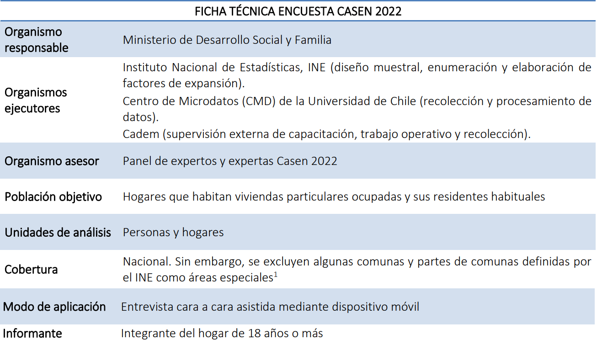
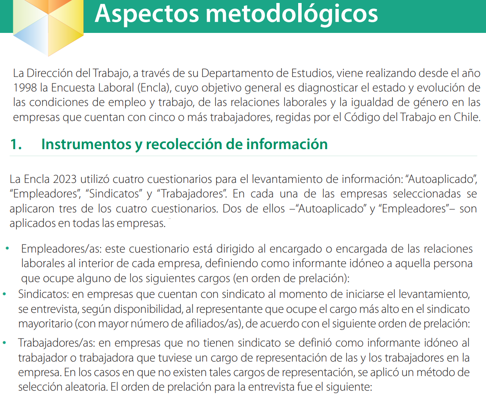

Conceptos clave para la investigación social I
Unidad 2: Descripción y Visualización de Datos
Gabriel Sotomayor
2025-08-25
Objetivos de la Sesión de Hoy
- Diferenciar entre el proceso de conceptualización (definir qué queremos decir) y operacionalización (definir cómo lo vamos a medir).
- Identificar la unidad de análisis y la unidad de observación en un diseño de investigación.
- Reconocer y evitar las falacias asociadas a las unidades de análisis (ecológica y reduccionista).
- Clasificar variables según su función en un modelo (independiente, dependiente).
- Distinguir entre los cuatro niveles de medición (nominal, ordinal, de intervalo, de razón) y comprender sus implicancias.
1. Del Concepto al Indicador
El Problema: Los Conceptos Sociológicos son Abstractos
Nuestros conceptos centrales —clase social, anomia, cohesión, prejuicio— no tienen una existencia tangible. No podemos “ver” o “tocar” el prejuicio.
- Como vimos con Babbie, el prejuicio no es una “cosa” en el mundo, sino un constructo: una creación teórica que hemos inventado para dar sentido a un conjunto de observaciones y experiencias.
- Un concepto, según Abraham Kaplan, es una “familia de concepciones”. Es una etiqueta para un conjunto de imágenes mentales que compartimos (de forma imperfecta) como sociedad.
El primer desafío de la investigación es pasar de estas ideas vagas y abstractas a algo que podamos estudiar sistemáticamente.
Conceptualización: El Proceso de Especificación
La conceptualización es el proceso a través del cual hacemos explícitos y precisos los conceptos abstractos que queremos estudiar. Es el viaje de una idea vaga a una definición teórica clara.
- Implica definir las dimensiones de un concepto, es decir, sus diferentes facetas o aspectos.
- Ejemplo: El concepto “capital social” es multidimensional. Podríamos conceptualizarlo en al menos dos dimensiones:
- Dimensión Estructural: Las redes de contactos que una persona tiene.
- Dimensión Cognitiva: El nivel de confianza que una persona tiene en los demás.
El producto final es una definición conceptual rigurosa que guiará nuestra investigación.
Operacionalización: El Puente hacia el Mundo Empírico
La operacionalización es el desarrollo de procedimientos de investigación específicos (operaciones) que nos permitirán observar y medir empíricamente los conceptos que hemos definido.
- En simple: Es el proceso de decidir exactamente cómo vamos a medir cada concepto y cada una de sus dimensiones.
- La operacionalización se basa en indicadores, que son observaciones que consideramos un reflejo de la variable que nos interesa.
Ejemplo: Para la dimensión “confianza” del capital social, un indicador podría ser el grado de acuerdo con la frase: “En general, se puede confiar en la mayoría de las personas”.
El Flujo Completo: De la Idea al Dato
- Concepción Mental (Idea vaga de “prejuicio”).
- Concepto (Constructo con nombre: “Prejuicio”).
- Conceptualización (Definición teórica: “Actitud negativa hacia un grupo social…”).
- Operacionalización (Procedimiento: Escala de acuerdo con frases sobre inmigrantes).
- Medición en el Mundo Real (Aplicación de la escala para obtener un puntaje de prejuicio).
La Jerarquía de la Medición
El viaje desde una idea abstracta hasta un dato observable sigue una jerarquía lógica, un proceso de “descomposición”. No todos los conceptos tienen todos los niveles, pero la lógica de ir de lo general a lo específico es siempre la misma.
Conceptos Unidimensionales vs. Multidimensionales
- Concepto Unidimensional: Se refiere a un fenómeno que puede ser medido adecuadamente a lo largo de una única dimensión o continuo.
- Ejemplo clásico: Edad. Se mide en una sola escala (años) que captura su esencia.
- Concepto Multidimensional: Se refiere a un fenómeno complejo que se compone de varias dimensiones distintas, las cuales no necesariamente se mueven juntas.
- Ejemplo clásico: Clase social en la tradición de Bourdieu, que no es solo dinero, sino una combinación de capital económico, cultural y social.
La mayoría de los conceptos interesantes en sociología (poder, anomia, desigualdad, bienestar) son multidimensionales.
Características de un Buen Indicador
Un indicador es la manifestación empírica de nuestro concepto. Para ser útil, debe tener ciertas características:
- Relevancia Teórica: Debe estar lógicamente conectado con la definición conceptual de la dimensión que pretende medir.
- Especificidad: Debe capturar un aspecto concreto del concepto, evitando la ambigüedad.
- Claridad: Debe ser fácil de entender tanto para el investigador como para el sujeto de estudio (si es una pregunta de encuesta).
- Sensibilidad: Debe ser capaz de registrar variaciones o cambios en el fenómeno.
Un buen conjunto de indicadores nos permite “ver” el concepto abstracto en el mundo real.
Una Pincelada de Calidad: Fiabilidad y Validez
¿Cómo sabemos si nuestros indicadores miden bien? Evaluamos dos criterios clave. (¡Esto es un adelanto de la próxima clase!)
Fiabilidad (Confiabilidad)
- Pregunta: ¿La medición es consistente y estable?
- Si repito la medición, ¿obtengo el mismo resultado?
- Se asocia con el error aleatorio.
Validez
- Pregunta: ¿Estoy midiendo realmente el concepto que quiero medir?
- ¿Mi indicador refleja el verdadero significado de mi concepto?
- Se asocia con el error sistemático (sesgo).
Ejemplo 1: Inseguridad Alimentaria (CASEN - FIES)
- Concepto: Inseguridad Alimentaria. No es simplemente “tener hambre”. La FAO lo define como la falta de acceso físico, social y/o económico a alimentos suficientes, inocuos y nutritivos.
- Enfoque de Medición: La Escala de Experiencia de Inseguridad Alimentaria (FIES) mide el acceso a los alimentos a través de la experiencia directa de las personas.
- Dimensión: La FIES conceptualiza la inseguridad alimentaria como un fenómeno unidimensional de severidad creciente, que va desde la preocupación por la comida hasta pasar un día entero sin comer.
Operacionalización de la Inseguridad Alimentaria
La FIES utiliza 8 preguntas (indicadores) que capturan distintos umbrales de esta escala de severidad.Cada respuesta afirmativa acumula evidencia de un mayor grado de severidad en esta única dimensión.
| Indicador (Pregunta Clave de la FIES - CASEN) |
|---|
| r8a. ¿Se preocupó por no tener suficientes alimentos por falta de dinero? |
| r8b. ¿No pudo comer alimentos saludables y nutritivos por falta de dinero? |
| r8c. ¿Comió poca variedad de alimentos por falta de dinero? |
| r8d. ¿Tuvo que dejar de desayunar, almorzar, tomar once o cenar por dinero? |
| r8e. ¿Comió menos de lo que pensaba que debía comer por falta de dinero? |
| r8f. ¿Se quedó sin alimentos por falta de dinero? |
| r8g. ¿Sintió hambre y no comió por falta de dinero? |
| r8h. ¿Dejó de comer todo un día por falta de dinero? |
Ejemplo 2: Clase Social como Capital Multidimensional
- Concepto: Clase Social.
- Punto de Partida Teórico (Bourdieu): Se supera la visión tradicional que reduce la clase a la ocupación o el ingreso. La clase es una posición en un espacio social, definida por el volumen y la composición de diferentes formas de poder o “capitales”.
- Conceptualización (Savage et al., 2013): Para analizar la estructura de clases contemporánea, se operacionalizan tres dimensiones centrales de capital que determinan las oportunidades y estilos de vida.
- Capital Económico: Recursos financieros y patrimoniales.
- Capital Social: Red de contactos y relaciones sociales.
- Capital Cultural: Conocimientos, gustos y habilidades que confieren prestigio.
Dimensión 1: Capital Económico
Definición: Refleja la riqueza material y los recursos financieros de un hogar. Es la dimensión más directa de la desigualdad.
Operacionalización en el “Great British Class Survey”: Se utilizaron tres indicadores clave para capturar tanto el flujo de dinero como el patrimonio acumulado.
- Indicador 1: Ingresos del Hogar
- Ejemplo de Pregunta: “¿Cuál es el ingreso total combinado de su hogar, de todas las fuentes, antes de impuestos y descuentos?” (se presentan tramos de respuesta).
- Indicador 2: Ahorros del Hogar
- Ejemplo de Pregunta: “Aproximadamente, ¿a cuánto ascienden los ahorros totales de su hogar?” (se presentan tramos).
- Indicador 3: Valor de la Vivienda
- Ejemplo de Pregunta: “Si tuviera que vender su vivienda hoy, ¿cuál cree que sería su precio de mercado aproximado?”.
Dimensión 2: Capital Social
Definición: La red de contactos y relaciones sociales que una persona puede movilizar. No se trata solo de “tener amigos”, sino del alcance y prestigio de esa red.
Operacionalización (Método: “Position Generator”): Se mide la extensión y el estatus de las redes sociales de una persona.
- Indicador 1: Amplitud de la Red (Número de Contactos)
- Mide la diversidad de la red. ¿Con cuántos tipos de personas diferentes se tiene contacto?
- Indicador 2: Estatus de la Red (Prestigio Promedio de los Contactos)
- Mide la “calidad” de la red en términos de prestigio social.
- Ejemplo de Pregunta: “De la siguiente lista de 37 ocupaciones, por favor, indique si conoce personalmente a alguien que trabaje en cada una de ellas (ej. Abogado/a, Electricista, CEO, Personal de Limpieza, Científico/a, Artista)”.
Dimensión 3: Capital Cultural
Definición: Los conocimientos, gustos, habilidades y credenciales que son valorados y confieren prestigio en una sociedad.
Operacionalización (Savage et al.): El estudio distinguió dos sub-dimensiones clave del capital cultural, reflejando cambios en lo que se considera “culto” o “valioso”.
- Sub-dimensión 1: Capital Cultural “Consagrado” (Highbrow)
- Representa el gusto por las formas culturales tradicionalmente consideradas “de élite” o “legítimas”.
- Sub-dimensión 2: Capital Cultural “Emergente”
- Representa la participación en formas culturales más nuevas, contemporáneas y a menudo asociadas con la juventud.
Indicadores del Capital Cultural
Capital Cultural “Consagrado”
- Indicadores:
- Gusto por la música clásica, ópera, jazz.
- Asistencia a teatros.
- Visitas a museos, galerías de arte.
- Visitas a patrimonio histórico (castillos, etc.).
- Ejemplo de Pregunta: > “¿Con qué frecuencia asiste a conciertos de música clásica? (Nunca, Raramente, A veces, Frecuentemente)”.
Capital Cultural “Emergente”
- Indicadores:
- Gusto por el rock, rap, pop.
- Asistencia a conciertos o “gigs”.
- Uso de videojuegos.
- Interacción en redes sociales.
- Práctica de deportes o asistencia al gimnasio.
- Ejemplo de Pregunta: > “¿Con qué frecuencia sale con sus amigos a un bar o pub? (Nunca, Raramente, A veces, Frecuentemente)”.
Conclusión del Ejemplo: Un Mapa de Clases
Este ejemplo ilustra cómo un concepto multidimensional como la clase social se descompone en dimensiones, sub-dimensiones e indicadores concretos para poder ser medido.
La combinación de los puntajes en estos tres capitales (económico, social y cultural) permitió a Savage y sus colegas ir más allá de la simple dicotomía “obrero vs. clase media”.
El Resultado: Mediante un análisis estadístico (Latent Class Analysis), identificaron un nuevo mapa de siete clases sociales en el Reino Unido, desde una “Élite” muy rica y conectada hasta un “Precariado” con bajos niveles en todos los capitales.
La gran calculadora de clases británica
2. ¿A Quién o Qué Estudiamos?
La Unidad de Análisis
La unidad de análisis es el “qué” o “quién” se está estudiando. Es la unidad sobre la cual queremos sacar conclusiones y hacer afirmaciones.
Tipos comunes de Unidades de Análisis en sociología:
- Individuos: El tipo más común (estudiantes, votantes, trabajadores).
- Grupos: Familias, equipos de trabajo, círculos de amigos.
- Organizaciones: Universidades, empresas, partidos políticos, sindicatos.
- Artefactos Sociales: Artículos de prensa, publicaciones en redes sociales, leyes, programas de televisión.
Definir la unidad de análisis es un paso crucial del diseño de investigación.
Unidad de Análisis vs. Unidad de Observación
Es fundamental no confundirlas.
- Unidad de Análisis: Aquello sobre lo que queremos hacer conclusiones.
- Unidad de Observación: La unidad de la cual recolectamos la información.
A veces son la misma:
- Para estudiar el rendimiento de los estudiantes (U. de Análisis), les tomamos una prueba a los estudiantes (U. de Observación).
A veces son diferentes:
- Para estudiar la dinámica de conflicto en los hogares (U. de Análisis), podríamos encuestar solo a las mujeres de esos hogares (U. de Observación). Aquí, la mujer es nuestra informante sobre el hogar.
Las Falacias Lógicas en la Investigación
Confundir las unidades de análisis lleva a errores graves de interpretación.
1. Falacia Ecológica
- Error: Sacar conclusiones sobre individuos basándose únicamente en datos de grupos o agregados.
- Ejemplo Clásico: Un estudio encuentra que las comunas con mayor porcentaje de población inmigrante tienen tasas de delincuencia más altas. Sería una falacia concluir que los individuos inmigrantes delinquen más, ya que no tenemos datos individuales para afirmarlo.
2. Reduccionismo
- Error: Intentar explicar un fenómeno social complejo (macro) únicamente en términos de factores individuales (micro).
- Ejemplo: Explicar el estallido social de 2019 (fenómeno macro) solo a partir de las motivaciones psicológicas o frustraciones individuales, ignorando factores estructurales como la desigualdad, el sistema político o la historia del país.
Actividad de Discusión (10 min)
Escenario de Investigación:
Un sociólogo analiza los resultados de la prueba PISA a nivel nacional y observa que los países con mayor gasto público en educación obtienen, en promedio, mejores puntajes. En su informe, concluye: “Esto demuestra que los estudiantes que asisten a escuelas públicas tienen mejor rendimiento que los que asisten a escuelas privadas”.
Preguntas para discutir:
1. ¿Cuál es la unidad de análisis de los datos que tiene el investigador?
2. ¿Sobre qué unidad de análisis está sacando sus conclusiones?
3. ¿Qué falacia lógica está cometiendo? ¿Por qué es un error?


Ejemplo Sociológico: ¿Cuál es la Unidad de Análisis de la Clase Social?
El debate sobre cómo integrar a las mujeres en los estudios de clase es un ejemplo perfecto de la importancia de definir la unidad de análisis.
- La Perspectiva Convencional (ej. Goldthorpe, 1983):
- La unidad de análisis es la familia (o el hogar).
- Supuesto 1: La familia tiene una posición de clase unitaria, ya que todos sus miembros comparten intereses materiales comunes.
- Supuesto 2: Esa posición de clase está determinada por la ocupación del “jefe de hogar” masculino, debido a su vínculo “más fuerte y duradero” con el mercado laboral.
- Consecuencia: La posición de clase de la mujer se deriva de la de su marido y su propia ocupación es irrelevante para el análisis.
Críticas Feministas a la Perspectiva Convencional
Autoras como Joan Acker, Michelle Stanworth y Janeen Baxter criticaron duramente estos supuestos:
- ¿Intereses Unitarios? Asumir que la familia es una unidad sin conflictos internos oscurece las relaciones de poder y desigualdad de género que existen dentro del hogar. Los recursos no se distribuyen equitativamente.
- ¿Vínculo Débil? Ignorar el trabajo remunerado de las mujeres es empíricamente insostenible y desestima cómo su propia posición de clase afecta sus oportunidades, poder de negociación y experiencias de vida.
- ¿Homogeneidad de Clase? Un gran porcentaje de los hogares son de clase heterogénea (los cónyuges pertenecen a clases distintas), lo que hace que el modelo convencional sea simplemente inadecuado.
- ¿Qué son los Intereses de Clase? Se reduce el “interés de clase” solo a los ingresos, ignorando experiencias clave en el trabajo como la autonomía o la dominación.
“oscurece el grado en que difieren las experiencias de clase de las esposas respecto de los maridos, e ignora el grado en que las desigualdades que dividen a hombres y mujeres son en sí mismas resultado del sistema de clases operante” (Stanworth, 1984).
Hacia una Solución: Posiciones Directas y Mediadas (Wright, 1989)
Erik Olin Wright propone una solución más sofisticada que supera la dicotomía individuo vs. familia.
- La posición de clase de una persona se compone de dos elementos:
- Posición de Clase Directa: Derivada de la propia relación con el mercado laboral (la propia ocupación).
- Posición de Clase Mediada: Derivada de las relaciones familiares (principalmente, la clase del cónyuge).
- Unidad de Análisis: El individuo dentro de un contexto familiar.
- Pregunta de Investigación Empírica: ¿Cuál es el peso relativo de la posición directa y la mediada para explicar fenómenos como la identidad de clase, el comportamiento político o la división del trabajo doméstico?
- Este peso puede variar para hombres y mujeres, y entre diferentes países.
Modelo de Wright: Efectos sobre la Identidad de Clase
- Posición Directa: Influye en la identidad a través de las experiencias en la producción (interacciones laborales, autonomía, etc.).
- Posición Mediada: Influye en la identidad a través de los intereses materiales y las experiencias de consumo del hogar.
La pregunta clave de Wright es: ¿cuál de estos dos caminos pesa más para hombres y mujeres en diferentes contextos nacionales?
Conclusión del Debate
- La “solución” convencional de usar al hombre para definir la clase de la familia es una simplificación teórica y empíricamente problemática.
- El debate nos muestra que no hay una respuesta única y universal. La elección de la unidad de análisis (individuo, familia, o individuo-en-familia) depende de la pregunta de investigación.
- Para estudiar la organización de la producción, la unidad apropiada podría ser el individuo.
- Para estudiar la distribución del consumo, la unidad apropiada podría ser la familia/hogar.
- En lugar de asumir una solución, debemos tratar el peso de las posiciones de clase directa y mediada como una pregunta empírica a investigar, como lo hace Wright.
3. El Lenguaje de la Medición
Variables Dependientes e Independientes
Para probar hipótesis sobre relaciones causales o de dependencia, clasificamos nuestras variables según su función en el modelo teórico.
Variable Independiente (X): La variable que consideramos la “causa” o el factor explicativo. Su variación no depende de otra variable dentro de nuestro modelo.
Variable Dependiente (Y): La variable que consideramos el “efecto” o el resultado a explicar. Su valor depende de la variable independiente.
Ejemplo de hipótesis: El nivel de educación (Variable Independiente) influye positivamente en el nivel de ingresos (Variable Dependiente) de una persona.
Los Niveles de Medición
No todos los números son iguales. El nivel de medición nos dice qué tipo de información contiene una variable y, por lo tanto, qué operaciones matemáticas y estadísticas son lógicas y válidas. Es una decisión clave en la operacionalización.
Hay cuatro niveles principales:
1. Nominal
2. Ordinal
3. De Intervalo
4. De Razón
Nivel de Medición: NOMINAL
- Definición: Las categorías de la variable no tienen un orden intrínseco. Los números, si se usan, son solo etiquetas arbitrarias.
- Propiedad Matemática: Igualdad / Desigualdad (
=,!=). - Ejemplos Sociológicos:
- Género (1=Mujer, 2=Hombre, 3=Otro)
- Afiliación Religiosa (1=Católico, 2=Protestante, 3=Ninguna)
- Región de Residencia (1=Norte, 2=Centro, 3=Sur)
- Operaciones Válidas: Contar frecuencias, calcular porcentajes y la moda. No tiene sentido calcular un “promedio de género”.
Nivel de Medición: ORDINAL
- Definición: Las categorías tienen un orden lógico o jerarquía, pero la distancia entre ellas no es necesariamente igual o cuantificable.
- Propiedades Matemáticas: Igualdad / Desigualdad y Orden (
>,<). - Ejemplos Sociológicos:
- Nivel Educativo (1=Básica, 2=Media, 3=Superior)
- Clase Social Subjetiva (1=Baja, 2=Media, 3=Alta)
- Escalas de Acuerdo tipo Likert (1=Muy en desacuerdo, …, 5=Muy de acuerdo)
- Operaciones Válidas: Mediana, percentiles, cuantiles. El uso de la media es controversial y requiere supuestos fuertes.
Nivel de Medición: INTERVALO Y RAZÓN
A menudo se agrupan porque sus propiedades estadísticas son muy similares.
- Definición: Los números representan un orden y las distancias entre ellos son iguales y significativas.
- Propiedades Matemáticas: Orden, distancia igual (
+,-). - Diferencia clave: Las variables de razón tienen un cero absoluto y real (significa ausencia de la propiedad), lo que permite formar cocientes (
*,/). Las de intervalo no. - Ejemplos Sociológicos:
- De Intervalo: Escalas estandarizadas como el Coeficiente Intelectual (CI) o la temperatura en Celsius.
- De Razón: Edad en años, Ingresos en pesos, Número de hijos, Años de escolaridad.
- De Intervalo: Escalas estandarizadas como el Coeficiente Intelectual (CI) o la temperatura en Celsius.
- Operaciones Válidas: Todas: media, desviación estándar, correlación, regresión.
Tabla Resumen de los Niveles de Medición
| Nivel de Medición | Propiedades | Ejemplo Sociológico | Operación Central |
|---|---|---|---|
| Nominal | Clasificación en categorías distintas | Estado Civil |
Frecuencias / Moda |
| Ordinal | Categorías con un orden jerárquico | Nivel de Acuerdo |
Mediana / Percentiles |
| Intervalo | Orden con distancia igual y significativa | Puntaje en escala de CI |
Media / Desv. Estándar |
| Razón | Orden, distancia igual y cero absoluto real | Ingresos ($) |
Todas (incluye razones) |
Actividad Práctica (15 min)
Instrucciones: Para cada una de las siguientes variables, identifiquen la unidad de análisis más probable y el nivel de medición más adecuado.
- La principal razón para elegir una carrera (medida con categorías como “vocación”, “ingresos”, “prestigio”).
- El número de protestas en diferentes ciudades de Chile durante un año.
- El grado de confianza en el gobierno (medido en una escala de 1 a 10, donde 1 es “ninguna” y 10 es “mucha”).
- El ingreso total del hogar en pesos.
- La afiliación a un partido político.
Cierre y Próximos Pasos
Resumen de la sesión de hoy:
- Hemos desglosado el proceso fundamental de pasar de una idea abstracta a un dato medible, definiendo la conceptualización, la operacionalización, las unidades de análisis y los niveles de medición.
- Comprendimos que estas decisiones técnicas no son triviales: definen lo que estudiamos y determinan el tipo de conclusiones que podemos alcanzar.
Adelanto de la próxima clase:
- En nuestra próxima sesión, abordaremos la segunda parte de los “Conceptos Clave de la Investigación”:
- Muestreo: ¿Cómo seleccionamos a quiénes estudiar?
- Validez y Fiabilidad: ¿Cómo sabemos si estamos midiendo bien?
- Error de Medición y Error Muestral.